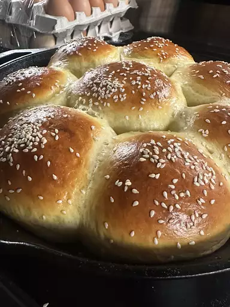

Hamburger Buns

These soft hamburger buns are perfect for burgers, pulled pork, or your favorite sandwich filling. I've gotten a thousand requests for these! Not only are these the perfect shape,
but they taste way better than anything that comes out of a plastic bag. The total time takes almost 4 hours, but the actual amount of work involved is maybe 10 minutes.
Ingredients
- Dry yeast
- Flour
- Warm water
- Large eggs
- Melted butter
- Sugar
- Salt
- Olive oil
How to Make Hamburger Buns
-
Place yeast into bowl of a large stand mixer; whisk in 1/2 cup flour and warm water until smooth. Let stand until mixture is foamy, 10 to 15 minutes.
-
Whisk 1 egg, melted butter, sugar, and salt thoroughly into the yeast mixture. Add remaining flour (about 3 cups).
-
Fit a dough hook onto stand mixer and knead the dough on low speed until soft and sticky,
5 to 6 minutes. Scrape sides if needed. Poke and prod the dough with a silicone spatula; if large amounts of dough stick to the spatula, add a little more flour.
-
Transfer dough onto a floured work surface; dough will be sticky and elastic but should not stick to your fingers. Gently form dough into a smooth, round shape, tucking loose ends underneath.
-
Wipe out the stand mixer bowl and drizzle in olive oil. Place dough in the bowl and turn it several times until the surface is thinly coated with oil.
Cover the bowl with aluminum foil and let dough rise in a warm place until doubled in size, about 2 hours.
HOME